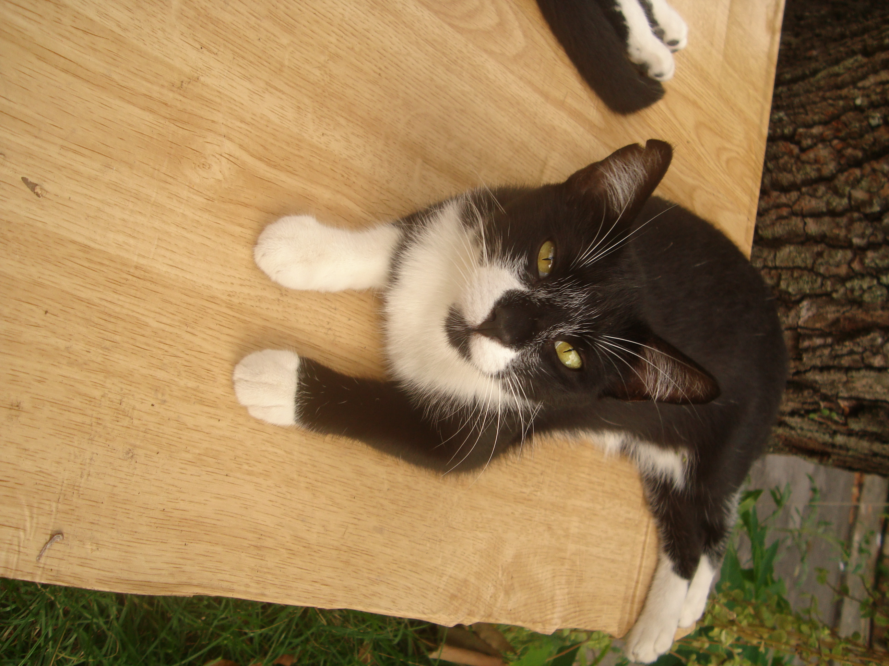
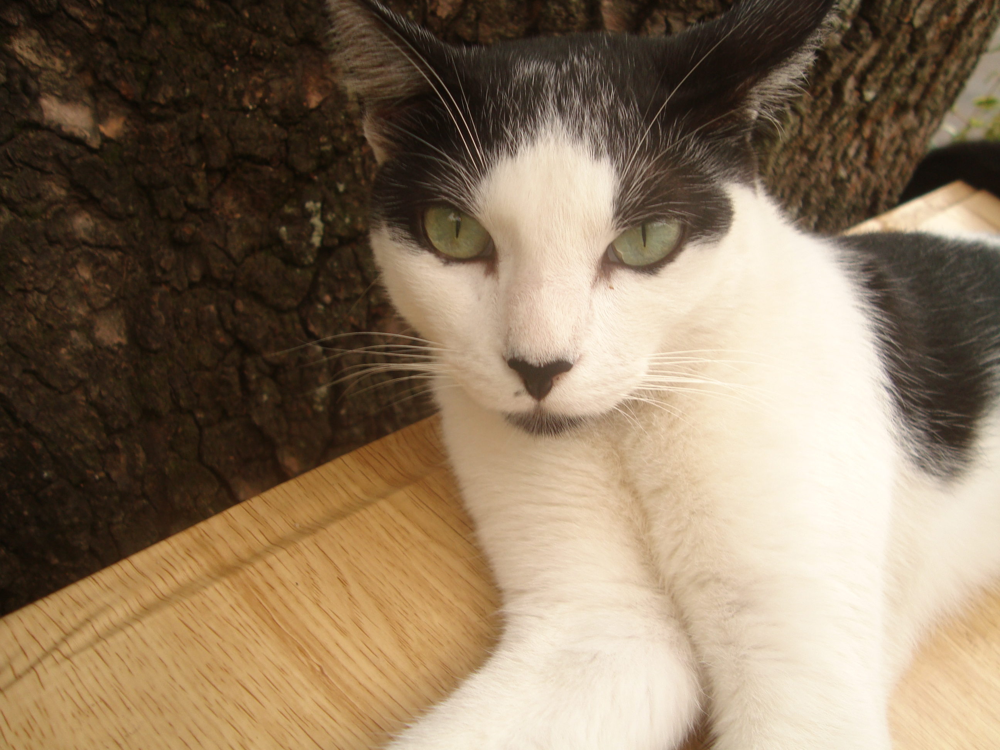

Colônia de gatos localizada na Ilha do Governador, Rio de Janeiro - RJ
Não somos uma ONG. Somos apenas um grupo de protetoras independente. Não temos abrigo ou espaço físico, nem possuímos qualquer fim lucrativo.
Não somos uma ONG. Somos apenas um grupo de protetoras independente. Não temos abrigo ou espaço físico, nem possuímos qualquer fim lucrativo.


A história da Colônia Êta Mundo Bom começou em janeiro de 2020, em uma casa antiga na Ilha
do Governador, Rio de Janeiro, RJ.
Os inquilinos que ali moravam se mudaram e deixaram para trás uma mãezinha e seus
filhotes. Uma humana percebeu que estavam sozinhos e passou a deixar potinhos de ração e água por
baixo do portão.
Apesar de terem sido abandonados à própria sorte, nessa casa estavam protegidos da chuva, do frio e
da maldade de alguns humanos. Um dia porém, o dono da casa apareceu e os gatinhos foram
despejados.
Um protetor da prefeitura recomendou que os gatinhos fossem realocados para um canteiro que
fica em frente à casa. Aos poucos, esse espaço foi sendo preparado para que
os bichanos ficassem confortáveis e em segurança. As tias e alguns vizinhos ajudaram a remover
lixo e entulho, plantaram flores, grama, mamão, aipim, tomate etc. A mureta do canteiro ganhou
duas demãos de tinta branca. O canteiro ficou muito bonito e livre de ratos e baratas. O irmão de
uma das tias construiu um lindo abrigo de madeira para que os potinhos de ração ficassem
protegidos da chuva e do sol.
Em novembro de 2020, uma das tias havia viajado. As outras tias estavam se preparando para
servir o jantar dos gatinhos, quando ouviram um burburinho vindo da rua. Ao chegarem na
colônia, receberam a notícia de que Candinho tinha sido atropelado. Uma das tias correu até ele
para que pudesse levá-lo ao veterinário, mas ao se aproximar, percebeu que ele já havia falecido.
Foi muito triste porque era um gatinho muito carinhoso. As humanas choraram muito. No dia
seguinte, pela manhã, ouvimos gritos vindos da colônia: um idoso invadiu o espaço dos bichanos
e arremessou o abrigo do outro lado da rua. O abrigo ficou danificado, mesmo com alguns
reparos. Acreditamos que tenha sido o mesmo homem que atropelou Candinho.
Desde então, vizinhos, protetores e conhecidos fazem a vigilância do local, 24 horas por dia. Em
2021, as humanas também providenciaram a instalação de câmeras de segurança.
O nome da colônia (Êta Mundo Bom) é inspirado na novela da TV Globo, exibida às 18h em
2016, sendo reexibida no Vale a Pena Ver de Novo, de abril a setembro de 2020.
A reexibição coincidiu com o início do período de isolamento decorrente da pandemia de COVID-
19. Todas assistíamos à novela. Esperávamos o episódio acabar para servir o jantar dos
gatinhos.
Assim, uma das humanas começou a dar nomes de personagens a cada integrante da colônia.
Os primeiros nomes foram Candinho e Filó.
FILÓ
Sexo: fêmea
Idade: 2 anos
Castrada: sim

Filó é uma das filhas da Frajolinha e Candinho. Nasceu em uma casa antiga, na Ilha do
Governador, Rio de Janeiro, RJ.
Ela adorava brincar com o pai (Candinho). Eram muito agarrados e estavam sempre juntos,
correndo, brincando, rolando no chão... era lindo de se ver.
No início de novembro de 2020, Filó viu seu paizinho ser atropelado. Por muito tempo
permaneceu tristinha.
Quando uma das humanas precisou se mudar para outro bairro, Filó quase abandonou a Colônia.
Mas as outras tias estavam sempre chamando por ela e dando muito carinho.
Foi castrada e hoje aguarda ser adotada. Está mais alegre, ganhou peso, voltou a rolar no chão
quando vê as humanas e até deixa a tia passar a mão na barriguinha.
Filó é muito meiga, carinhosa e comportada. É uma gatinha muito boazinha e está muito ansiosa
por uma família amorosa. Já foi castrada.
Quer adotar a Filó? Entre em contato
ROMEU
Sexo: macho
Idade: 2 anos
FIV/FELV negativo
Vacinado contra raiva
Castrado: sim

Romeu apareceu miando na garagem do prédio em 2019. Era um filhotinho. Duas tias foram
socorrê-lo e uma delas levou uma mordidinha na mão. Romeu estava muito assustado e com
medo. Correu e entrou pela janela de uma vizinha... lá ficou até a metade de 2020.
A vizinha que Romeu havia adotado, resolveu se mudar. Ela sempre deixou Romeu dar suas
voltinhas pela vizinhança, mas nunca poderíamos imaginar que iria embora e deixaria Romeu
para trás... Demorou algumas longas semanas para se adaptar à vida de gato abandonado e ser
aceito pelos moradores da Colônia.
Após alguns meses, começou a ficar na porta da humana que tem uma gatinha. A Nina não
gostava nada das visitas do Romeu... miava, rosnava e ficava muito brava. Então, a humana
dela resolveu castrá-lo.
Romeu já se machucou 2 vezes na rua. Na primeira vez, apareceu com um machucado na perna,
tentamos capturá-lo para tratar, mas estava muito arisco. O jeito foi colocar remédio na ração.
Na segunda vez, apareceu com um corte entre os dedinhos da pata. Dessa vez, conseguimos
levá-lo para tratamento. Ficou cerca de 1 mês recebendo cuidados.
Hoje, Romeu se tornou muito carinhoso e amoroso com as tias. Tem medo de pessoas
desconhecidas, mas depois de um tempinho, se acostuma logo. Ele está para adoção, à procura
de uma família que o trate com muito amor e carinho. Ah, a tia da mordidinha fez curativo e ficou
boa. Ela e Romeu já fizeram as pazes e hoje são amigos.